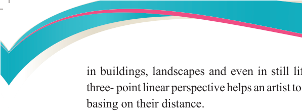
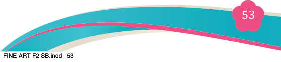
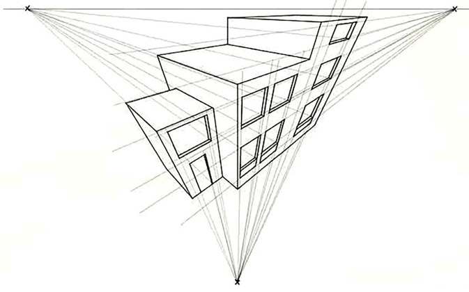
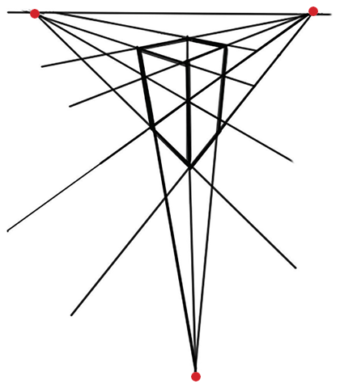
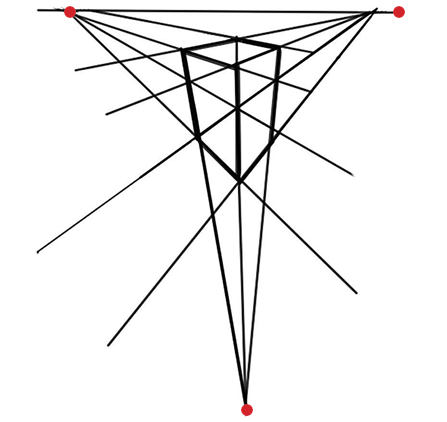

<!DOCTYPE html>
<html lang="en">

<head>
    <meta charset="utf-8" />
    <meta name="viewport" content="width=558, height=768" />
    <title>Fine Art for Secondary Schools</title>
    <meta name="title-id" content="pg059_sec001" />
    <meta name="page-section-id" content="59" />
    <link href="./content/tailwind_output.css" rel="stylesheet">
    <link href="./assets/libs/fontawesome/css/all.min.css" rel="stylesheet">
    <link href="./assets/fonts.css" rel="stylesheet">
    <link rel="preconnect" href="https://fonts.googleapis.com">
    <link rel="preconnect" href="https://fonts.gstatic.com" crossorigin>
    <link href="https://fonts.googleapis.com/css2?family=Caladea&amp;family=Tinos&amp;family=Arimo&amp;display=swap" rel="stylesheet">
    <style>
      html { width: 100%; height: 100%; background: #e5e7eb; }
      body { background: #e5e7eb; }
      #content {
        visibility: hidden;
        background: #fff;
        outline: 1px solid rgba(15, 23, 42, 0.28);
        box-shadow: 0 10px 30px rgba(15, 23, 42, 0.22);
      }
    </style>
    <noscript><style>#content { visibility: visible !important; }</style></noscript>
</head>

<body style="margin:0;overflow:hidden;width:100%;height:100%">
    <main>
      <div id="content" data-fl-reference-width="558" style="position:relative;width:558px;height:768px;margin:0 auto;overflow:hidden">
  
  
  
  
  
  
  
  
  <p data-id="pg059_p000" data-adt-raster-text="1" data-adt-reading-order="8" data-segments="[{&quot;text&quot;:&quot;Fine Art for Secondary Schools&quot;,&quot;style&quot;:{&quot;font-family&quot;:&quot;Caladea,Merriweather,serif&quot;,&quot;font-size&quot;:&quot;9px&quot;,&quot;color&quot;:&quot;#231f20&quot;}}]" data-adt-fit="1" style="position:absolute;z-index:2;top:49px;left:344px;line-height:9px;width:120px;height:9px;white-space:nowrap;opacity:0"><span style="font-family:Caladea,Merriweather,serif;font-size:9px;color:#231f20">Fine Art for Secondary Schools</span></p>
  
  <p data-id="pg059_p001" data-adt-raster-text="1" data-adt-reading-order="28" data-segments="[{&quot;text&quot;:&quot;53&quot;,&quot;style&quot;:{&quot;font-family&quot;:&quot;Caladea,Merriweather,serif&quot;,&quot;font-size&quot;:&quot;12px&quot;,&quot;color&quot;:&quot;#ffffff&quot;}}]" data-adt-fit="1" style="position:absolute;z-index:2;top:704px;left:277px;line-height:12px;width:1px;height:12px;white-space:nowrap;opacity:0"><span style="font-family:Caladea,Merriweather,serif;font-size:12px;color:#ffffff">53</span></p>
  
  
  <p data-id="pg059_p002" data-adt-raster-text="1" data-adt-reading-order="27" data-segments="[{&quot;text&quot;:&quot;Student&#x2019;s Book&quot;,&quot;style&quot;:{&quot;font-family&quot;:&quot;Tinos,&apos;Times New Roman&apos;,Times,Merriweather,serif&quot;,&quot;font-size&quot;:&quot;9px&quot;,&quot;color&quot;:&quot;#231f20&quot;}},{&quot;text&quot;:&quot; Form &quot;,&quot;style&quot;:{&quot;font-family&quot;:&quot;Tinos,&apos;Times New Roman&apos;,Times,Merriweather,serif&quot;,&quot;font-size&quot;:&quot;9px&quot;,&quot;color&quot;:&quot;#231f20&quot;,&quot;font-weight&quot;:&quot;bold&quot;}},{&quot;text&quot;:&quot;Two&quot;,&quot;style&quot;:{&quot;font-family&quot;:&quot;Tinos,&apos;Times New Roman&apos;,Times,Merriweather,serif&quot;,&quot;font-size&quot;:&quot;9px&quot;,&quot;color&quot;:&quot;#231f20&quot;,&quot;font-weight&quot;:&quot;bold&quot;,&quot;font-style&quot;:&quot;italic&quot;}}]" data-adt-fit="1" style="position:absolute;z-index:2;top:703px;left:365px;line-height:9px;width:97px;height:12px;white-space:nowrap;opacity:0"><span style="font-family:Tinos,&apos;Times New Roman&apos;,Times,Merriweather,serif;font-size:9px;color:#231f20">Student&#x2019;s Book</span><span style="font-family:Tinos,&apos;Times New Roman&apos;,Times,Merriweather,serif;font-size:9px;color:#231f20;font-weight:bold"> Form </span><span style="font-family:Tinos,&apos;Times New Roman&apos;,Times,Merriweather,serif;font-size:9px;color:#231f20;font-weight:bold;font-style:italic">Two</span></p>
  
  <p data-id="pg059_p003" data-adt-reading-order="9" data-segments="[{&quot;text&quot;:&quot;in buildings, landscapes and even in still life drawings. The knowledge of&quot;,&quot;style&quot;:{&quot;font-family&quot;:&quot;Tinos,&apos;Times New Roman&apos;,Times,Merriweather,serif&quot;,&quot;font-size&quot;:&quot;12px&quot;,&quot;color&quot;:&quot;#231f20&quot;}}]" data-adt-fit="1" style="position:absolute;z-index:2;top:82px;left:106px;line-height:12px;width:169px;height:16px;white-space:nowrap;letter-spacing:-0.15px"><span style="font-family:Tinos,&apos;Times New Roman&apos;,Times,Merriweather,serif;font-size:12px;color:#231f20">in buildings, landscapes and even in still life drawings. The knowledge of</span></p>
  <p data-id="pg059_p004" data-adt-reading-order="10" data-segments="[{&quot;text&quot;:&quot;three- point linear perspective helps an artist to appropriately size out the objects&quot;,&quot;style&quot;:{&quot;font-family&quot;:&quot;Tinos,&apos;Times New Roman&apos;,Times,Merriweather,serif&quot;,&quot;font-size&quot;:&quot;11.903461456298828px&quot;,&quot;color&quot;:&quot;#231f20&quot;}}]" data-adt-fit="1" style="position:absolute;z-index:2;top:98px;left:106px;line-height:12px;width:169px;height:16px;white-space:nowrap;letter-spacing:-0.15px"><span style="font-family:Tinos,&apos;Times New Roman&apos;,Times,Merriweather,serif;font-size:11.903461456298828px;color:#231f20">three- point linear perspective helps an artist to appropriately size out the objects</span></p>
  <p data-id="pg059_p005" data-adt-reading-order="11" data-segments="[{&quot;text&quot;:&quot;basing on their distance.&quot;,&quot;style&quot;:{&quot;font-family&quot;:&quot;Tinos,&apos;Times New Roman&apos;,Times,Merriweather,serif&quot;,&quot;font-size&quot;:&quot;12px&quot;,&quot;color&quot;:&quot;#231f20&quot;}}]" data-adt-fit="1" style="position:absolute;z-index:2;top:114px;left:106px;line-height:12px;width:169px;height:16px;white-space:nowrap"><span style="font-family:Tinos,&apos;Times New Roman&apos;,Times,Merriweather,serif;font-size:12px;color:#231f20">basing on their distance.</span></p>
  
  <p data-id="pg059_p006" data-adt-reading-order="13" data-segments="[{&quot;text&quot;:&quot;Figure 3.23: &quot;,&quot;style&quot;:{&quot;font-family&quot;:&quot;Tinos,&apos;Times New Roman&apos;,Times,Merriweather,serif&quot;,&quot;font-size&quot;:&quot;10px&quot;,&quot;color&quot;:&quot;#231f20&quot;,&quot;font-weight&quot;:&quot;bold&quot;}},{&quot;text&quot;:&quot;An example of three point linear perspective&quot;,&quot;style&quot;:{&quot;font-family&quot;:&quot;Tinos,&apos;Times New Roman&apos;,Times,Merriweather,serif&quot;,&quot;font-size&quot;:&quot;10px&quot;,&quot;color&quot;:&quot;#231f20&quot;,&quot;font-style&quot;:&quot;italic&quot;}}]" data-adt-fit="1" style="position:absolute;z-index:2;top:331px;left:91px;line-height:10px;width:184px;height:16px;text-align:center;white-space:nowrap"><span style="font-family:Tinos,&apos;Times New Roman&apos;,Times,Merriweather,serif;font-size:10px;color:#231f20;font-weight:bold">Figure 3.23: </span><span style="font-family:Tinos,&apos;Times New Roman&apos;,Times,Merriweather,serif;font-size:10px;color:#231f20;font-style:italic">An example of three point linear perspective</span></p>
  <p data-id="pg059_p007" data-adt-reading-order="14" data-segments="[{&quot;text&quot;:&quot;Source: &quot;,&quot;style&quot;:{&quot;font-family&quot;:&quot;Tinos,&apos;Times New Roman&apos;,Times,Merriweather,serif&quot;,&quot;font-size&quot;:&quot;10px&quot;,&quot;color&quot;:&quot;#231f20&quot;,&quot;font-weight&quot;:&quot;bold&quot;}},{&quot;text&quot;:&quot;https://mammothmemory.net/art/techniques/painting-and-drawing-\n&quot;,&quot;style&quot;:{&quot;font-family&quot;:&quot;Tinos,&apos;Times New Roman&apos;,Times,Merriweather,serif&quot;,&quot;font-size&quot;:&quot;10px&quot;,&quot;color&quot;:&quot;#007c91&quot;}},{&quot;text&quot;:&quot;techniques/how-to-draw-perspectivethree-point-perspective.html&quot;,&quot;style&quot;:{&quot;font-family&quot;:&quot;Tinos,&apos;Times New Roman&apos;,Times,Merriweather,serif&quot;,&quot;font-size&quot;:&quot;10px&quot;,&quot;color&quot;:&quot;#007c91&quot;}}]" data-adt-fit="1" style="position:absolute;z-index:2;top:347px;left:91px;line-height:10px;width:184px;height:30px;text-align:center;white-space:pre"><span style="font-family:Tinos,&apos;Times New Roman&apos;,Times,Merriweather,serif;font-size:10px;color:#231f20;font-weight:bold">Source: </span><span style="font-family:Tinos,&apos;Times New Roman&apos;,Times,Merriweather,serif;font-size:10px;color:#007c91">https://mammothmemory.net/art/techniques/painting-and-drawing-
</span><span style="font-family:Tinos,&apos;Times New Roman&apos;,Times,Merriweather,serif;font-size:10px;color:#007c91">techniques/how-to-draw-perspectivethree-point-perspective.html</span></p>
  <p data-id="pg059_p009" data-adt-reading-order="15" data-segments="[{&quot;text&quot;:&quot;Steps for drawing a 3-point linear perspective&quot;,&quot;style&quot;:{&quot;font-family&quot;:&quot;Tinos,&apos;Times New Roman&apos;,Times,Merriweather,serif&quot;,&quot;font-size&quot;:&quot;12px&quot;,&quot;color&quot;:&quot;#231f20&quot;,&quot;font-weight&quot;:&quot;bold&quot;}}]" data-adt-fit="1" style="position:absolute;z-index:2;top:394px;left:86px;line-height:12px;width:189px;height:16px;white-space:nowrap"><span style="font-family:Tinos,&apos;Times New Roman&apos;,Times,Merriweather,serif;font-size:12px;color:#231f20;font-weight:bold">Steps for drawing a 3-point linear perspective</span></p>
  <p data-id="pg059_p010" data-adt-reading-order="16" data-segments="[{&quot;text&quot;:&quot;The following are guiding steps in drawing a box in three point linear perspective:&quot;,&quot;style&quot;:{&quot;font-family&quot;:&quot;Tinos,&apos;Times New Roman&apos;,Times,Merriweather,serif&quot;,&quot;font-size&quot;:&quot;11.968358993530273px&quot;,&quot;color&quot;:&quot;#231f20&quot;}}]" data-adt-fit="1" style="position:absolute;z-index:2;top:419px;left:86px;line-height:12px;width:189px;height:16px;white-space:nowrap;letter-spacing:-0.15px"><span style="font-family:Tinos,&apos;Times New Roman&apos;,Times,Merriweather,serif;font-size:11.968358993530273px;color:#231f20">The following are guiding steps in drawing a box in three point linear perspective:</span></p>
  <p data-id="pg059_p011" data-adt-reading-order="17" data-segments="[{&quot;text&quot;:&quot;Step 1&quot;,&quot;style&quot;:{&quot;font-family&quot;:&quot;Tinos,&apos;Times New Roman&apos;,Times,Merriweather,serif&quot;,&quot;font-size&quot;:&quot;12px&quot;,&quot;color&quot;:&quot;#231f20&quot;,&quot;font-weight&quot;:&quot;bold&quot;}}]" data-adt-fit="1" style="position:absolute;z-index:2;top:449px;left:86px;line-height:12px;width:32px;height:16px;white-space:nowrap"><span style="font-family:Tinos,&apos;Times New Roman&apos;,Times,Merriweather,serif;font-size:12px;color:#231f20;font-weight:bold">Step 1</span></p>
  
  <p data-id="pg059_p012" data-adt-reading-order="22" data-segments="[{&quot;text&quot;:&quot;(a): \u0007Introducing the horizon line,\n&quot;,&quot;style&quot;:{&quot;font-family&quot;:&quot;Tinos,&apos;Times New Roman&apos;,Times,Merriweather,serif&quot;,&quot;font-size&quot;:&quot;12px&quot;,&quot;color&quot;:&quot;#231f20&quot;}},{&quot;text&quot;:&quot;varnishing point and orthogonal\n&quot;,&quot;style&quot;:{&quot;font-family&quot;:&quot;Tinos,&apos;Times New Roman&apos;,Times,Merriweather,serif&quot;,&quot;font-size&quot;:&quot;12px&quot;,&quot;color&quot;:&quot;#231f20&quot;}},{&quot;text&quot;:&quot;on the space&quot;,&quot;style&quot;:{&quot;font-family&quot;:&quot;Tinos,&apos;Times New Roman&apos;,Times,Merriweather,serif&quot;,&quot;font-size&quot;:&quot;12px&quot;,&quot;color&quot;:&quot;#231f20&quot;}}]" data-adt-fit="1" style="position:absolute;z-index:2;top:633px;left:86px;line-height:12px;width:176px;height:48px;white-space:pre"><span style="font-family:Tinos,&apos;Times New Roman&apos;,Times,Merriweather,serif;font-size:12px;color:#231f20">(a): Introducing the horizon line,
</span><span style="font-family:Tinos,&apos;Times New Roman&apos;,Times,Merriweather,serif;font-size:12px;color:#231f20">varnishing point and orthogonal
</span><span style="font-family:Tinos,&apos;Times New Roman&apos;,Times,Merriweather,serif;font-size:12px;color:#231f20">on the space</span></p>
  <p data-id="pg059_p015" data-adt-reading-order="18" data-segments="[{&quot;text&quot;:&quot;Step 2&quot;,&quot;style&quot;:{&quot;font-family&quot;:&quot;Tinos,&apos;Times New Roman&apos;,Times,Merriweather,serif&quot;,&quot;font-size&quot;:&quot;12px&quot;,&quot;color&quot;:&quot;#231f20&quot;,&quot;font-weight&quot;:&quot;bold&quot;}}]" data-adt-fit="1" style="position:absolute;z-index:2;top:449px;left:285px;line-height:12px;width:32px;height:16px;white-space:nowrap"><span style="font-family:Tinos,&apos;Times New Roman&apos;,Times,Merriweather,serif;font-size:12px;color:#231f20;font-weight:bold">Step 2</span></p>
  
  <p data-id="pg059_p016" data-adt-reading-order="21" data-segments="[{&quot;text&quot;:&quot;(b): \u0007 Using the orthogonal to draw a\n&quot;,&quot;style&quot;:{&quot;font-family&quot;:&quot;Tinos,&apos;Times New Roman&apos;,Times,Merriweather,serif&quot;,&quot;font-size&quot;:&quot;12px&quot;,&quot;color&quot;:&quot;#231f20&quot;}},{&quot;text&quot;:&quot;box with three vanishing points&quot;,&quot;style&quot;:{&quot;font-family&quot;:&quot;Tinos,&apos;Times New Roman&apos;,Times,Merriweather,serif&quot;,&quot;font-size&quot;:&quot;12px&quot;,&quot;color&quot;:&quot;#231f20&quot;}}]" data-adt-fit="1" style="position:absolute;z-index:2;top:632px;left:285px;line-height:12px;width:181px;height:32px;white-space:pre"><span style="font-family:Tinos,&apos;Times New Roman&apos;,Times,Merriweather,serif;font-size:12px;color:#231f20">(b):  Using the orthogonal to draw a
</span><span style="font-family:Tinos,&apos;Times New Roman&apos;,Times,Merriweather,serif;font-size:12px;color:#231f20">box with three vanishing points</span></p>
  <p data-id="pg059_p019" data-adt-reading-order="30" data-segments="[{&quot;text&quot;:&quot;04/08/2025 13:54&quot;,&quot;style&quot;:{&quot;font-family&quot;:&quot;Arimo,Arial,Helvetica,Merriweather,sans-serif&quot;,&quot;font-size&quot;:&quot;6px&quot;,&quot;color&quot;:&quot;#ffffff&quot;}}]" data-adt-fit="1" style="position:absolute;z-index:2;top:746px;left:474px;line-height:6px;width:48px;height:6px;white-space:nowrap"><span style="font-family:Arimo,Arial,Helvetica,Merriweather,sans-serif;font-size:6px;color:#ffffff">04/08/2025 13:54</span></p>
<script src="./assets/auto-fit.js"></script>
</div>
    </main>
    <script>
      (function () {
        var c = document.getElementById("content");
        if (!c) return;
        var W = parseFloat(c.style.width) || c.offsetWidth || 1;
        var H = parseFloat(c.style.height) || c.offsetHeight || 1;
        var ref = parseFloat(c.getAttribute("data-fl-reference-width"));
        var refW = ref > 0 ? ref : W;
        var FALLBACK = 96;
        function dock() {
          var v = parseFloat(getComputedStyle(document.documentElement).getPropertyValue("--dock-height"));
          return v > 0 ? v : FALLBACK;
        }
        function fit() {
          var DOCK = dock();
          var byW = window.innerWidth / refW;
          var byH = (window.innerHeight - DOCK) / H;
          var s = Math.min(2, byW, byH > 0 ? byH : byW);
          c.style.position = "absolute";
          c.style.left = "50%";
          c.style.top = "calc((100% - " + DOCK + "px) / 2)";
          c.style.margin = "0";
          c.style.transformOrigin = "center center";
          c.style.transform = "translate(-50%, -50%) scale(" + s + ")";
          c.style.visibility = "visible";
        }
        fit();
        window.addEventListener("resize", fit);
        window.addEventListener("load", fit);
        window.addEventListener("adt:dock-resize", fit);
      })();
    </script>

    <div class="relative z-50" id="interface-container"></div>
    <div class="relative z-50" id="nav-container"></div>
    <script src="./assets/offline-preloader.js"></script>
    <script src="./assets/scorm.js"></script>
    <script src="./assets/base.bundle.local.js"></script>
</body>

</html>
